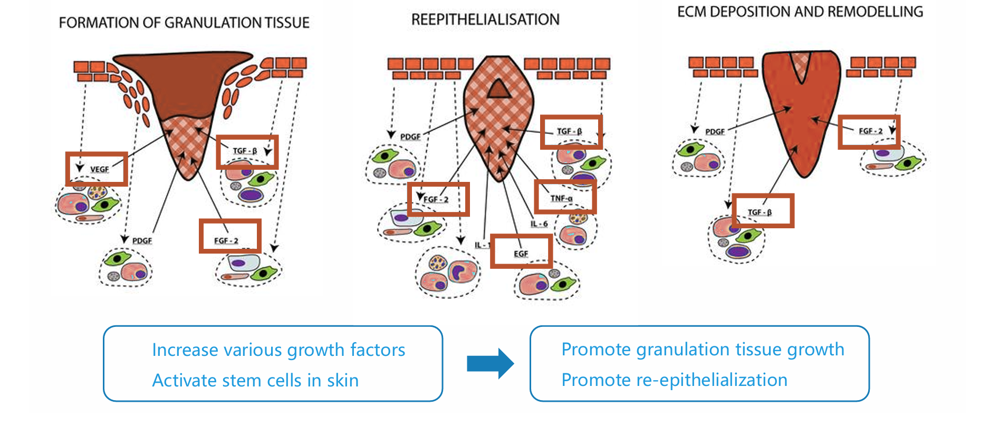
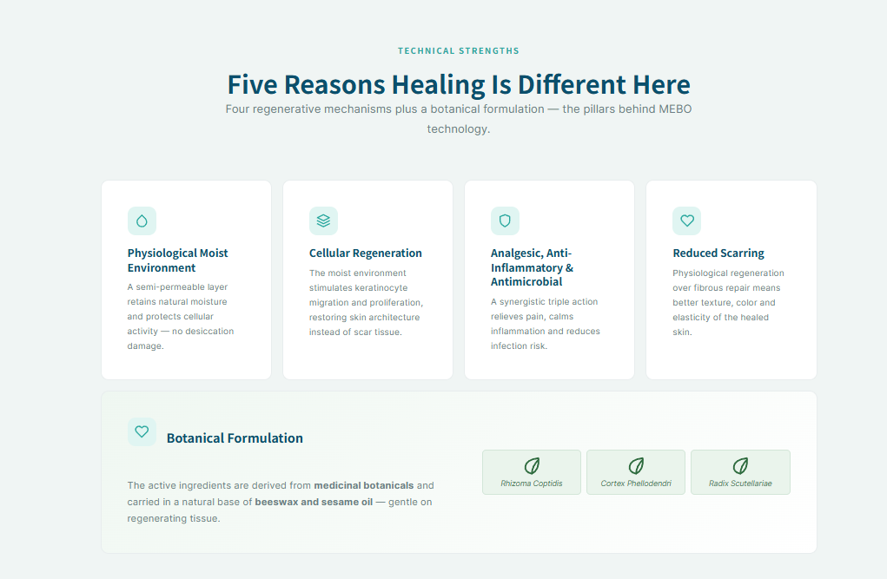

Medicina Regenerativa
A Tecnologia de Medicina Regenerativa (RMT) representa uma mudança de paradigma: em vez de ressecar a ferida, cria um ambiente que imita as condições fisiológicas naturais da pele saudável.
Da MEBT à Tecnologia Médica Regenerativa
Nos anos 1980, o Prof. Rongxiang Xu apresentou Moist Exposed Burn Therapy (MEBT), com Moist Exposed Burn Ointment (MEBO) como seu agente terapêutico central, transformando o tratamento de queimaduras na China. O avanço rendeu o Prêmio Estatal de Invenção Tecnológica da China em 1988. Nas décadas seguintes, a MEBT evoluiu para uma plataforma regenerativa completa — o que hoje se reconhece como Tecnologia Médica Regenerativa (RMT).
O que começou como uma inovação clínica para queimaduras tornou-se um sistema regenerativo reproduzível. Os mesmos princípios agora restauram tecidos em feridas crônicas, traumáticas e cirúrgicas, e doenças dermatológicas — oferecendo aos pacientes de todo o mundo uma alternativa real ao cuidado convencional.
Era MEBT — Desde os anos 1980
Tratamento de Queimaduras, Redefinido
- MEBO Apresentada pelo Prof. Rongxiang Xu, Revolucionando o Tratamento de Queimaduras
- Primeiro Certificado de Novo Medicamento da Medicina Tradicional Chinesa
- Prêmio Estatal de Invenção Tecnológica da China, 1988
Era RMT — Hoje
Uma Plataforma Regenerativa Completa
- Cobre Queimaduras Além de Feridas Crônicas, Traumáticas e Cirúrgicas, e Dermatologia
- Aplicações em Países da LATAM e Acesso a 70+ Countries
- Mais de 35 Associações/Sociedades Acadêmicas em Cooperação com a RMT
Uma evolução — da MEBT à RMT, das queimaduras a uma plataforma regenerativa completa.
FERIDAS AGUDAS VS CRÔNICAS
Os mecanismos por trás da RMT não são teóricos — eles respondem a desafios clínicos reais.
Feridas Agudas
Causadas por cirurgia, trauma ou queimaduras, as feridas agudas seguem uma sequência ordenada de reparo e geralmente fecham em 2–4 semanas. O manejo adequado mantém essa cascata no rumo certo e ajuda a prevenir a progressão para o estado crônico. O manejo inadequado de feridas agudas pode romper a cascata normal de cicatrização, progredindo para feridas crônicas.
Feridas Crônicas
As feridas crônicas estagnam em um estado inflamatório prolongado e não fecham por mais de 4 semanas — às vezes meses ou anos. Mais comuns: pé diabético, úlceras venosas de perna e úlceras por pressão.
Duas Jornadas Muito Diferentes
Da Cicatrização Passiva à Regeneração Ativa
Estimula a regeneração da pele in situ após o tratamento com a Pomada MEBO, por meio do aumento de fatores de crescimento e da ativação de células-tronco epidérmicas.

As células-tronco epidérmicas contendo queratina podem proliferar e se diferenciar em tecidos de todas as camadas da pele.

Nas feridas agudas, a RMT fornece as condições fisiológicas que mantêm a cascata de reparo no rumo certo.
Nas feridas crônicas, ela reativa o programa estagnado ao estimular células-tronco e restaurar o microambiente da ferida.
Conheça o Produto
Conheça os detalhes da Pomada MEBO: apresentação, indicações, modo de usar e informações de segurança.
Ver a Pomada MEBO